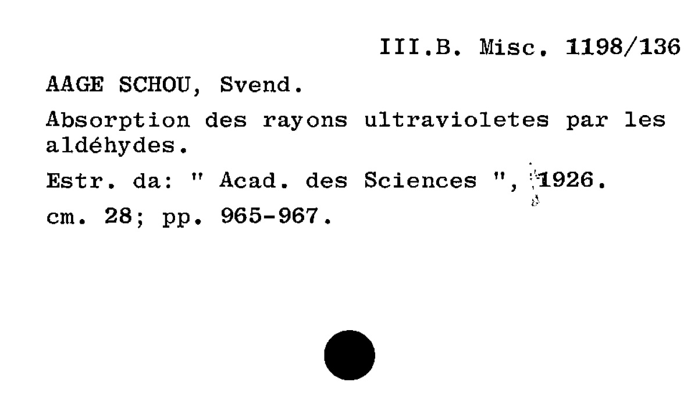

A world kept
between pages.
Every catalogue card is a small act of memory. Together, they reveal a library of scientific curiosity, old books, and ideas that travel across languages and centuries.
Follow the story ↓
FROM THE ORIGINAL CARD CATALOGUE ↗Centuries on a shelf.
A library brings distant moments into the same room. Explore the dates detected on sampled cards, decade by decade.
Stories within the books.
Look inside historical reference copies, read sourced introductions, and see the evidence for how many copies survive.
Institutional reference copies illustrate matched editions. Images are not photographs of the family’s own books. Research includes broad candidate matching, approximate editions and confidence labels.
Explore books & works →Research coverage & confidence →One library. Seven chapters.
The original catalogue gives the collection its own architecture. These proportions count every scanned page, across all source files.
The order is part of the story.
Author letters organize most sections. Alongside three “Volumi” groups, the catalogue makes room for miscellanea, two old-book sections, and a dedicated group for periodicals, theses, and atlases.
“Previously contained in another location.” The original description of Volumi 2 preserves a trace of the collection’s physical history. It does not supply a date or identify the location.
Page totals describe the digitized catalogue, not a verified count of unique books. Cards may describe papers, volumes, serials, or continuations.
A library with open borders.
Read the catalogue as a meeting place: scientific subjects and place names appear across its cards. Select a name or theme to explore the evidence.
Places named on the cards
Exact city-name mentions in the OCR sample. A mention may identify a publisher, institution, or subject; it is not evidence of family travel.
Threads of curiosity
Overlapping keyword groups, drawn from card text. These are exploratory themes, not the catalogue’s original subject classifications.
Pull out a card.
Search the transcribed sample. Open any card to read its raw OCR and inspect a facsimile of the original page.
The archive,
with its edges visible.
This webpage was created from the supplied Biblioteca folder. All 147 PDFs were inventoried. The author catalogue now processes all 49,780 scanned pages; the earlier collection visualizations retain their original, explicitly labeled sample. Section names were recovered from the accompanying legacy catalogue database, Agustoni.sdf. Original application files were treated as archival material, not executed.
OCR can misread names, punctuation, and numbers. Years are automatically detected candidates from card text, not independently verified publication dates. Dates of purchase, inheritance, and family ownership are not established here. No biographical events or family relationships have been invented.
Each card identifies its original filename and page. The linked PDFs contain only the sampled pages; their page order differs from the full originals. The source-page number remains visible on each card.
Download the extracted data ↗ Download the complete file inventory ↗